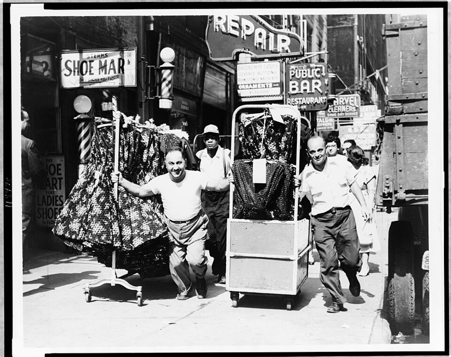
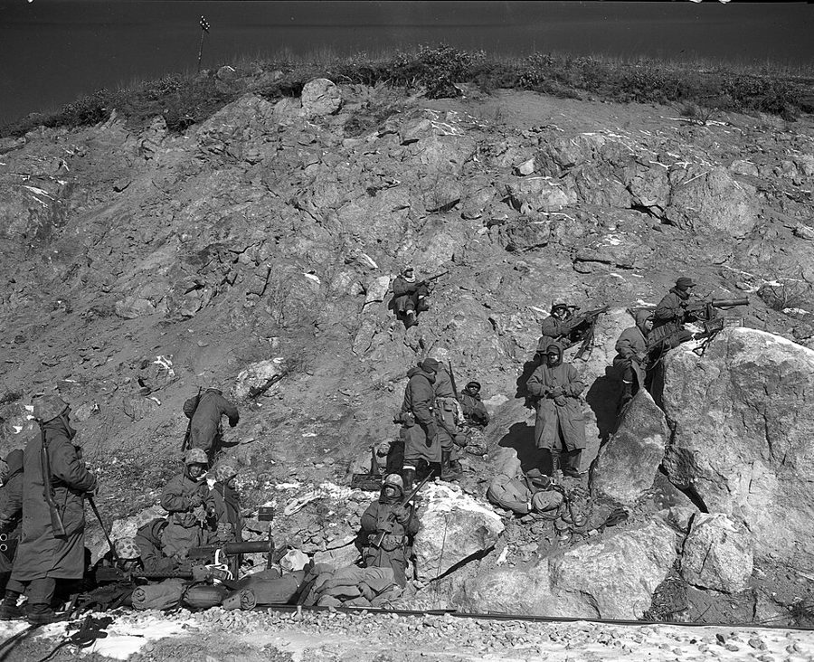
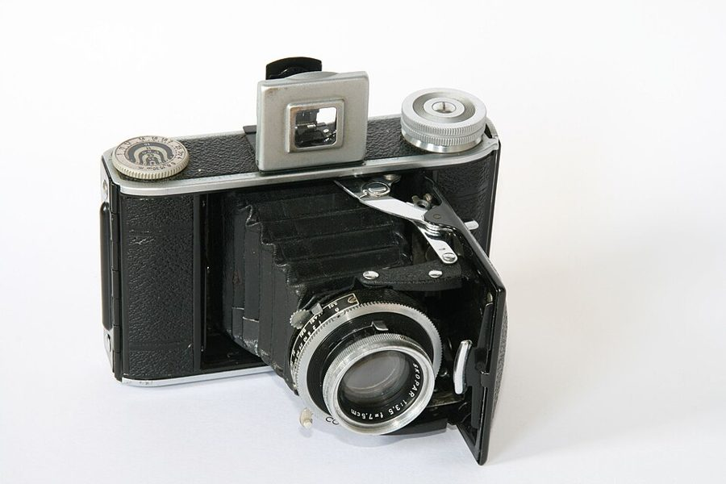

这一章在做什么
1948 年 1 月到 1951 年 10 月，十七岁到二十一岁。先在纽约打工、失业、读夜校，1950 年秋去华盛顿当政府文员，半年后回纽约等征兵通知。这是他头一回完全靠自己过日子。
读的时候盯住两样：每份工钱的数目，和他每一次为什么换工作。
1948 1949 1950 1951 1952
在哪
纽约
华盛顿
纽约
干活
制衣厂杂工
失业和机械厂轮着来
政府文员
机械厂
夜校
1948.9 起，断断续续
1948.1 离家
1950.6 朝鲜战争爆发
1951.10 应征
本站示意图，月份按书里的说法估计。作者生于 1930 年 6 月，离家时十七岁半。
出场的人
这一章的人分三拨：纽约的陌生人、纽约养他的那一家、华盛顿生他的那一家。后两拨听书时很容易串。
the magistrate /ˈmædʒɪstreɪt/，没有名字 第 2 章末尾判他可以离家的法官，条件是定期报到，直到二十一岁。第 2 节的电话就是打给他的。
the truant officer /ˈtruːənt/，没有名字 管逃学的督学，第 2 章里管过他逃学的事。现在调去管夜校的入学手续。
Ed Gally 男，机械厂的工头 借给他五块钱，后来给他全职，1951 年又收留他。全章唯一像长辈的人。
the young woman 机械厂的女工，没有名字 Ed Gally 劝他别招惹的那位。叫他 schoolboy，后来借给他一台相机。
Frank 另一家机械厂的工头 只在手指受伤那一场出现，带他去找肯保手指的医生。
Jimmy Birdie 和 Lacy 的儿子 第 2 章里出生的小男孩，他和养母一家闹翻后唯一还亲的人。
Mary Frances 亲姐姐，大一岁 第 2 章末来纽约找过他。已婚，在华盛顿有房子，他先在她家住了两周。
William 亲哥哥，大两岁 Howard 大学的学生，和他最谈得来，也最爱和他抬杠。对局势比他乐观。
Charles 大哥，三十出头 邮递员，自学电子，自己装了业余电台和音响。
Aunt Adrue 女，生父的姐妹 生母去世后带大了 William 和 Mary Frances，想把他也管起来。
Mrs. Sowell 就是 Mom。 第 3 节里租客老太太说的 Mrs. Sowell 是养母，他在这一章不再叫她 Mom，只说 the family。
同一节里他写信去解释的 Shirley ，是第 2 章里那个住新泽西、戴上拳击手套把他打倒的女孩。第 9 节的 my other family 指亲生的兄姐。
纽约：养他的一家
华盛顿：生他的一家
Mom 养母，已闹翻
Birdie
Lacy
Ruth
Jimmy 他们的儿子
Aunt Adrue 生父的姐妹
Charles 三十出头
William 大两岁
Mary Frances 大一岁
我 二十岁
Aunt Adrue 带大了 William 和 Mary Frances
两个哥哥，他到华盛顿才头一回见
本站示意图。年龄是 1950 年秋他到华盛顿时的。左边那一家他离家时断了来往，1951 年回纽约后恢复到「客气」为止。
背景：作者默认你知道的事
章名是一首歌
I’m Looking Over a Four Leaf Clover 是 1927 年的老歌，1948 年初重新走红，电台里到处在放，所以他说是「新歌」。四叶草是好运的记号，歌词唱的是：好运一直在眼前，从前没留意。
第 1 节他刚离家、走出地铁站时听到它，当成兆头。紧跟着一句是全章的调子：好运要等很久才来。
服装区，和一周 25 美元

1955 年，纽约服装区的人行道。推着衣架在各家工厂和批发商之间送货，是这里最底层的活，他干的就是这一类。
New York World-Telegram and the Sun 报社摄影，公有领域，维基共享资源 garment district 在曼哈顿中城西侧，大致 34 街到 42 街之间，成衣厂和批发商挤在一起。当时联邦最低工资是每小时 40 美分，他周薪 25 美元不算最低，但扣完税只剩 22.50。
nickel 是 5 美分硬币，书里他为省下一个 nickel 宁可走路。
周薪 $25
吃 $13.75
房租 $5.75
地铁 $0.50
剩 $2.50
先扣 $2.50
到手 $22.50（take-home pay）
本站示意图，数字全部出自第 3 节。每周能动用的余钱是 2.50 美元，买一台旧打字机要攒好几个星期。
夜校，和他走过的路
纽约的公立高中晚上开夜校（evening high school），给白天上班的人补高中课程。他上课的 Washington Irving High School 在 Union Square 东边，白天是一所女子高中。
这一章的地名几乎全在曼哈顿一条南北线上：街号越大越靠北，哈莱姆在 110 街以北，工厂和夜校在南头。
↑ 北
曼 哈 顿
布朗克斯
149 街站附近 少年之家
布鲁克林
Williamsburg 试训
163 街 自己租的小房间
155 街 遇见 Jimmy
152 街 1951 年的住处
145 街 养母家
34–42 街 服装区
14 街 夜校
布鲁克林桥南 机械厂
没钱坐地铁时 走路上班，约 13 公里
本站示意图，不按比例，只表示南北先后。圆点是这一章里出现的地方。
Civil Service：考进政府
美国联邦政府的普通职位从 1883 年起凭公开考试录用，由 Civil Service Commission（文官事务委员会）主持。考过了不等于有工作：名字进候补名单，哪里有空缺才通知。
所以他 1949 年考完，1950 年夏末才等到信，职位在华盛顿。对一个高中没念完的人，这是他够得着的头一份坐办公室的稳定工作。
1950 年的华盛顿
爱德华·默罗（Edward R. Murrow），1947 年。二战时他从伦敦向美国做现场广播，每次以 This is London 开头。他和 William 每晚守着收音机听的就是他。
CBS Radio，公有领域，维基共享资源 首都在地理和习俗上都属于南方。公立学校按种族分开，到 1954 年最高法院判决后才合并；市中心的餐馆不让黑人入座，到 1953 年最高法院判决后才改变。
Howard University 是 1867 年建校的黑人大学。G.I. Bill 是 1944 年的法律，退伍军人上大学由政府出钱。Washington Star 是当地的大报。
朝鲜战争和征兵

1950 年 12 月 6 日，朝鲜北部，南撤途中的美国海军陆战队第一师在山坡上清除拦路的对手。他说战争「忽然成了自己的事」，指的就是这个冬天。
美国海军陆战队官方照片，美国国家档案馆，公有领域，维基共享资源 1950 年 6 月 25 日战争爆发，以美军为主的联合国军参战，总司令是麦克阿瑟（MacArthur）。秋天联合国军北进，10 月下旬起中国军队入朝，战线南退，战争拖到 1953 年 7 月才停火。
Selective Service 是美国的征兵制度：男子满 18 岁向住地的 draft board（征兵委员会）登记，由它决定谁在什么时候入伍。
留个记号：后面还会回来
这一章有四处，作者自己说了「后来还有下文」。先记下，不用现在弄明白。
「太晚了」 第 4 节 督学递给他夜校表格时说的话。他说这句话后来一再回来缠着他。往后读到他每一次回学校，想一想这句话。
一套旧百科全书 第 6 节 花 1.17 美元买的，里面有马克思的条目。他说自己被这套想法吸引了十年。十年是怎么结束的，后面的章节会讲。
借来的相机 第 8 节 他说摄影后来在他的人生转折里起了大作用。到本章末尾，他自己已经买过三台相机。
朝鲜 第 8 节 他只用半句话提到战争爆发，说它对自己影响长远。下一章从报到那天写起。

福伦达（Voigtländer）Bessa 系列的一台折叠相机，这一台是 Bessa 66，不一定是他买的那个型号。镜头圈上的刻度就是第 13 节里说的三样「可调」：光圈、对焦、快门速度。
Till Niermann，CC BY-SA 3.0，维基共享资源 词与短语
词条按书里出现的顺序排，小标题是原书用 • • • 隔开的各节。斜体小字是那句话里的几个词，在 Kindle 里搜它就能跳到那一句。单个的生词长按就能查，这里收的主要是词典帮不上忙的。
第 1 节 · 少年之家的头一夜
elevated subway station
… off the elevated subway station at …
高架上的地铁站
纽约地铁出了曼哈顿常在高架上跑，口语叫 the El。所以下一句是霓虹灯在「下面的街上」闪。
little did I know
… Little did I know how long …
我那时哪里知道
否定词开头的倒装。回忆录里的预告句式：后来的事和当时想的不一样。
whatever they may have been before
… whatever they may have been before …
不管他们来之前是什么样
话里有话：住进这里的男孩，多半有点来历。
push-button knife
… pulled out my push-button knife, flicked …
弹簧刀
= switchblade。第 2 章他在码头一带送电报时开始带的。
making a statement
… that was “making a statement” about …
亮明态度
他借后来年代的时髦说法开玩笑。意思是让同屋的人看清楚：夜里别来碰我。
have any thoughts about
… in case anyone had any thoughts …
动什么念头
钱包也摆在刀旁边：偷钱的念头也别动。
第 2 节 · 给法官的电话
could not see
… I could not see reporting to …
没法接受（自己去做某事）
see 后面跟 -ing：设想、认可。report to 是定期去报到。
magistrate
… to a magistrate for years to …
基层法院的法官
读 /ˈmædʒɪstreɪt/。处理少年、治安一类小案子。
it’s not up to you
… “It’s not up to you!” he …
这由不得你
burn your bridges
… really burned your bridges behind you, …
自断退路
过了桥把桥烧掉。搬了家、辞了工，法官找不到他，他也回不去。
son
… “Good luck to you, son.” …
孩子，小伙子
年长男人对年轻人的称呼，口气软下来了。不是认他当儿子。
第 3 节 · 一间小屋和一笔账
9 X 12 rug
… as a 9 X 12 rug. …
9 乘 12 英尺的地毯
美国地毯的标准尺寸，约 10 平方米。读作 nine by twelve。
hot plate
… bought myself a hot plate, so …
小电炉
不是「热盘子」。单间出租屋没有厨房，靠它热罐头。
come to
… most weeks, and it came to …
合计是
算账用语。同一句后面的 added up to 也是这个意思。
take-home pay
… a take-home pay of $22.50 from …
到手的工资
扣掉税和各种代扣之后拿回家的数。wages 是税前。
unfinished business
… one other piece of unfinished business. …
一件没了结的事
business 是「事情」，不是生意。
room
… lady who roomed there and who …
租一间房住在别人家里
作动词。哈莱姆的人家常把多余的房间租给 roomer，贴补房租。第 13 节还有一次。
on welfare
… and who was on welfare. …
靠政府救济金过日子
welfare 在美国专指救济，不是泛泛的「福利」。
第 4 节 · 三条捷径都没走通
take me out in all kinds of weather
… took me out in all kinds …
害我不管什么天气都得在外面跑
主语是 the work。送货的活。
not something I really wanted to
… was not something I really wanted …
不是我多想做的事
往轻里说。实情是没钱：每周只剩两块五，学费出不起。
rejection slips
… accumulation of rejections slips made their …
退稿条
杂志社随稿退回的一张印好的小条。书里印作 rejections slips。
did not waste much time
… did not waste much time deciding …
没多花时间（就退了）
反话。稿子周一寄出、周二退回，编辑看一眼就毙了。
fold
… because the magazine folded. …
（刊物、公司）停办，倒闭
不是「折叠」。他头一回被录用的四行诗，登没登出来都不知道。
try-out
… I had a try-out with the …
球队的公开选拔
Dodgers 是布鲁克林道奇队。1947 年它让 Jackie Robinson 上场，是二十世纪大联盟第一支用黑人球员的球队，所以一个黑人少年这时候去试训并不离奇。
boot a ground ball
… I booted a couple of ground …
漏接地滚球
棒球行话。boot 是防守失误，球像被踢了一脚似的弹开。守备不过关，就轮不到打击。
get ahead
… get ahead the hard, slow way, …
往上走，混出头
前面三样（插画、写作、棒球）他叫 instant success ，这里是它的反面。
truant officer
… that my old truant officer was …
管逃学的督学
truant /ˈtruːənt/：逃学的学生。教育局派人上门查不到校的孩子。
bring myself to
… I couldn’t bring myself to explain …
怎么也开不了口去……
只用于否定：心里过不去，做不出来。
where I left off
… over, right where I left off.” …
当初断掉的地方
leave off = 中途停下。
pass you by
… opportunity has already passed you by.” …
从你身边过去了，错过了
come back to haunt
… it came back to haunt me …
事后一再回来缠着人
haunt 本义是鬼魂出没。
第 5 节 · 1949：失业、当铺、机械厂
call back
… to call some of us back …
叫回来复工
和 layoff（因为没活而裁人）配套。不是回电话。第 6 节 Ed Gally 也说了这话。
fall back on
… very little saved to fall back …
（出事时）可以指望的
canyons
… into the canyons of midtown Manhattan, …
高楼夹出来的深街
canyon 是峡谷。写曼哈顿的惯用比喻。
get back to me
… that they would get back to …
回头再答复我
面试的客套话，多半没有下文。
pawn
… some money by pawning my one …
拿去当掉
读 /pɔːn/。pawnshop 是当铺。my one suit ：唯一的一套西装。第 13 节他又站在当铺橱窗前，这回是买东西。
knish
… I ordered a knish and an …
犹太馅饼
k 要读出来：/kəˈnɪʃ/。面皮包土豆泥，烤或炸。下东区是犹太移民聚居的地方，这是街头最便宜的热食。
down to my last dollar
… literally down to my last dollar …
只剩最后一块钱
down to = 减到只剩。literally 说明不是夸张。
day-old bread
… where to buy day-old bread for …
隔天的面包
面包店把前一天没卖完的降价处理。
jelly
… and a jar of jelly for …
果酱
美式英语里 jelly 是抹面包的果酱，不是果冻（那是 Jell-O）。
hold back
… company policy to hold back a …
押着不发
工厂惯例：头几天的工钱押到离职时才结。
take a fatherly interest in
… Gally took a fatherly interest in …
像父亲那样关照
take an interest in 某人：留心他、肯为他操心。对比第 13 节征兵局对他的 interest。
though unsuccessfully in this case
… though unsuccessfully in this case. …
不过这一回没劝住
往轻里说：他还是和那位女工好上了。书里的感情事都是这样半句带过。
rainy day
… money for another rainy day. …
手头紧的日子
save for a rainy day ：存钱以备不时之需。
Western Union messenger
… as a Western Union messenger again. …
西联电报公司的送报员
again：第 2 章他十六岁退学后干的头一份全职就是这个。
quitting time
… afternoon, near quitting time, a great …
下班的钟点
不是辞职。第 6 节他赶去报名考试那天又出现一次。
offer no future
… but it offered no future, while …
没有前途
对面是 a step up in skills ：手艺上能往上走一级。
seniority
… regular unionized workers had seniority. …
工龄优先
读 /ˌsiːniˈɔːrəti/。工会合同规定：裁人先裁后来的，复工先叫先来的。他不是工会的正式工，排在最后。
第 6 节 · 百科全书和公务员考试
pique
… analysis was especially piqued by reading …
勾起（兴趣）
读 /piːk/，和 peak 同音。Max Lerner 是当时纽约有名的自由派专栏作家。
was to be attracted
… I was to be attracted for …
后来（十年里）一直被吸引
be to 表示站在当时看的「后来」。作者交代以后的事都用它。
in store for
… experience was in store for me …
在前头等着
和商店无关。store = 储备。
run out
… when the orders ran out at …
（订单）做完了，没有了
tide me over
… me to save to tide me …
帮我撑过（一段难关）
第 8 节的 see me through 是同一个意思。
civil service
… I heard about civil service jobs …
政府文职，公务员
civil 是相对军职说的「文职」，不是「民事」。
security
… A white-collar job with security seemed …
（工作的）稳定，有保障
不是保安。white-collar：坐办公室的。
file
… and filed to take the clerk’s …
递交申请
作动词：正式提交表格。
第 7 节 · 街上遇见 Jimmy
go our separate ways
… and went our separate ways. …
各走各的路
和一个小孩握手告别，是把他当大人。
第 8 节 · 定额、相机、手指
geared to
… geared to each man’s doing 60 …
按……来设定的
gear 是齿轮。流水线上每一道都卡着同一个速度。
try as I might
… Try as I might, I could …
不管我怎么拼命
= however hard I tried。固定的倒装。
wrack my brain
… have to wrack my brain to …
绞尽脑汁
也拼作 rack。
deliverance
… It was like a deliverance. …
得救
带宗教味的词：被从苦难里救出来。和送货的 delivery 无关。他没说想出的办法是什么。
unheard-of
… I earned the unheard-of pay of …
闻所未闻的（高）
64 美元，是两年前周薪的两倍半。
at a snail’s pace
… advancing at a snail’s pace. …
慢得像蜗牛爬
a war broke out
… that a war broke out in …
一场战争爆发了
和「借了台相机」并排，用同样平的口气说。越平越要紧。
look like hamburger
… of the finger look like hamburger. …
烂得像一团碎肉
hamburger 在美国也指做汉堡的生牛肉馅。
workmen’s compensation
… get paid by workmen’s compensation,” he …
工伤保险
compensation 是赔偿。雇主按法律投保，工人受伤由它付医药费。
see spots before my eyes
… could see spots before my eyes, …
眼前冒黑点（要晕过去）
后面的 bringing me out of it ：把我弄醒过来。
第 9 节 · 华盛顿，另一家人
hear from
… I heard from the Civil Service …
收到……的来信
hear from 是对方主动联系你；hear about 才是听说。
or rather
… was—or rather, where I had been. …
更准确地说
纠正自己的上半句：告诉家里的是一个他已经搬走的地址。
my other family
… contact with my other family—Mary Frances …
我的另一个家
亲生的兄姐。全书头一次这样叫。
on the G.I. Bill
… to school on the G.I. Bill …
靠退伍军人法案上学
G.I. 是美国兵的俗称。on = 靠……的钱。
out of the blue
… say to me, out of the blue: …
冷不丁地
字面是晴空里掉下来的。
many and many a year ago
… “It was many and many a …
很多很多年以前
爱伦·坡 1849 年的诗 Annabel Lee 的头一句，美国学生都背过。书里把名字拼作 Annabelle，第三行也和原诗略有出入，是两兄弟凭记忆对的。
devotees of
… were also devotees of Edward R. …
……的忠实听众
读 /ˌdevəˈtiːz/。同一段后面 Murrow 有一处印作 Morrow’s，是同一个人。shush：嘘别人安静。
few outlets for
… there were few outlets for this …
没什么施展的地方
outlet 本义是出口。一句话交代了大哥为什么只是邮递员。
Southern town
… was almost a typical Southern town, …
南方城镇（实行隔离的那种）
大写的 Southern 指美国南方。这半句是在说隔离，不是说气候和口音。
get on my nerves
… however, increasingly got on my nerves. …
越来越让我受不了
find it a pain
… I found it a pain that …
觉得很烦人
a pain = 麻烦事。口气很轻，说的是饿着肚子进不了餐馆。要往重里读。
subject myself to
… hungry rather than subject myself to …
让自己去受（那种待遇）
作动词，重音在后 /səbˈdʒekt/。
第 10、11 节 · Aunt Adrue，和指甲
wholly-owned subsidiary
… over, like a wholly-owned subsidiary. …
全资子公司
商业术语用在姑姑身上：她打算把他整个接管。subsidiary 读 /səbˈsɪdieri/。
fall into the clutches of
… from falling into the clutches of …
落入……的魔掌
姑姑的原话。下一句他说自己不觉得躲开这种「魔掌」有多急，是反着说：他并不想躲。
smooth things over
… trying to smooth things over, “and …
打圆场
Siamese twins
… care if they were Siamese twins,” …
连体双胞胎
Siamese 读 /ˌsaɪəˈmiːz/，暹罗的。William 说姑姑和父亲「很亲」，他拿这个顶回去。
run my life
… not going to run my life.” …
管我怎么过日子
run = 管理、支配。
something of a
… something of an unexpected present. …
算得上是一件……
把话说得留有余地的写法。
第 12 节 · 战争成了自己的事
draft age
… a young man of draft age. …
征兵年龄
draft 在美国是征兵，不是草稿。被征的人叫 draftee。
Syngman Rhee
… puppet government under Syngman Rhee in …
李承晚
读 /ˈsɪŋmən ˈriː/，听书时很难和汉字名对上。韩国首任总统。puppet government：傀儡政府。
backs against the sea
… with our backs against the sea, …
背后就是海，无路可退
套用成语 backs against the wall 。半岛上被往南压的军队，身后只有海。
giant strides
… blacks were making “giant strides.” …
长足的进步
stride 是大步。当时谈种族问题的套话，所以他听到就烦。
drink to that
… we go drink to that—at a …
为这个干一杯
drink to 某事 = 举杯庆祝。包袱在破折号后面，见最后的检查题。
第 13 节 · 回纽约，等通知
take more of an interest in
… and more of an interest in …
对……越来越上心
反话。征兵委员会「关心」他，是要抓他去当兵。
den
… a sort of living room-den. …
小起居室兼书房
本义是兽穴。美国住宅里指一间随便坐坐、看书的小房间。
civility
… but we achieved civility and I …
客客气气
只到「不失礼」为止，不是和好。
lens openings
… but with adjustable lens openings. …
光圈
现在叫 aperture。box camera 是最简单的方盒子相机，什么都不能调。
marked down
… it was marked down to $17.50 …
降价到
华盛顿诞辰（2 月 22 日）是假日，当地商店那天大减价。
trade in
… I eventually traded in the Speedex …
拿旧的折价换新的
Voigtländer 是德国牌子，中文叫福伦达。德语里 V 读 f，听书时这个词不容易认出来。
on borrowed time
… a civilian on borrowed time. …
过一天算一天（日子是借来的）
通常说重病的人。这里是说平民身份随时会到期。
on both counts
… to be correct on both counts. …
两条都（说中了）
count = 一项、一条。两条是：夜校有社交；征兵局不等他念完。
induction
… to Selective Service for induction into …
入伍（手续）
下一章开头还是这个词。
get my life together
… had gotten my life together a …
把日子理出个样子
后面跟着 a little bit ，又是往小里说。
值得停下来的句子
“But it’s too late now. Your opportunity has already passed you by.”— 第 4 节，督学把夜校的表格递给他时说的。本站译：「可现在太晚了。你的机会已经错过去了。」
说话的人不坏，作者特意交代了这一点。分量在下一句：这话伤他，是因为和他自己心里想的一样。十八岁，白天送货，晚上从高中重念。
记住这句话再往后读，后面几章里他每进一所学校，都是在和它较劲。这是本站的读法，作者自己只说它「一再回来」。
… which is how I judged, as a young radical—not according to what the limited alternatives might have been.— 第 12 节，讲他二十岁时怎么看朝鲜战争。本站译：我那时是个年轻的激进派，就是这么下判断的，而不是看当时有限的几种选择各是什么。
which 指前半句：拿「理想」去量「现实」，一看有差距就愤慨。破折号后面是七十岁的作者在说话：判断一件事，该比的是几个实际可选的方案，而不是拿它和一个不存在的完美状态比。
这是他后来几十本书里反复讲的道理。这里他没有展开，只用半句话把当年的自己和现在的自己分开。读这本书，要常常分辨是哪一个他在说话。
检查一下理解
先在心里答，再点开。答错的那题，回书里把那一节再读（或再听）一遍。
1. 第 1 节他睡前把弹簧刀弹开、塞到枕头下面，是打算动手吗？ 不是。那是做给同屋的人看的：夜里谁也别来碰他，也别碰他的钱包。他用后来年代的时髦话把这叫作「表态」，是开玩笑的口气。他对这些男孩并没有恶感，只是一个人惯了，处处提防。
2. 第 3 节那位老太太谢他留下的番茄罐头。这件事为什么让他更不想回那个家？ 他走时把自己囤的罐头全留给了她，有菠萝、汤、豌豆。Mrs. Sowell（就是养母）只转交了番茄，还说他只留了这些，其余的自己扣下了。事情很小，但正是他在第 2 章末尾受够了的那一套：占便宜，再编个说法。
3. Western Union 每周给 26 美元，机械厂只给 18 美元，他为什么辞掉的是 Western Union？ 他比的不是眼前的钱。送电报干多久都还是送电报；机械厂能学到手艺，而他找工作时一再碰壁，就是因为没有手艺和经验。何况机械厂是 20 小时拿 18 美元，时薪高得多。这个决定当时很险，后来 Ed Gally 给了他全职。
4. 手指被冲床砸了，工头 Frank 为什么带着他走过好几家诊所都不进去？ Frank 说那些医生会直接截掉手指，因为截肢能从工伤保险那里拿到钱。他要找的是一位肯费事保住手指的医生。这位医生说手指能保住，但指甲不会再长了。第 11 节的「圣诞礼物」就是接这句话的。
5. 第 12 节他说南北朝鲜都是大国扶起来的傀儡政府。作者写这一段，是在坚持这个看法吗？ 不是。他是在交代二十岁的自己怎么想，并且点明那是「年轻激进派」的判断方式：只拿理想和现实比。写书时的他已经不这样看问题了。他当时反对这场战争，先是出于立场，等中国军队参战、战事看不到头，才变成切身的事。
6. William 一说黑人处境在大步改善，他就提议「去市中心找家酒吧喝一杯庆祝」。这是邀请吗？ 是挖苦。华盛顿市中心的酒吧和餐馆不接待黑人，两个人根本进不去。他用一句话把 William 的漂亮话顶了回去。不过作者也照实写了 William 的看法：有些事已经在变。两兄弟谁说得对，书里没有当场下结论。